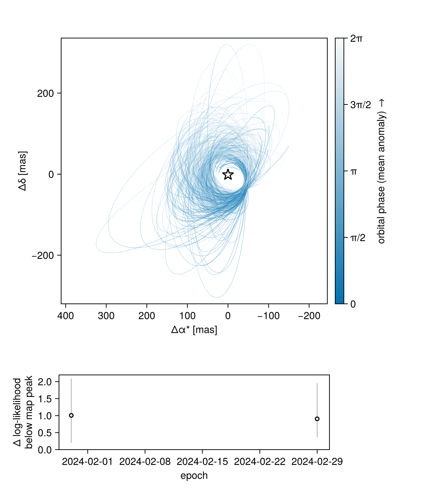
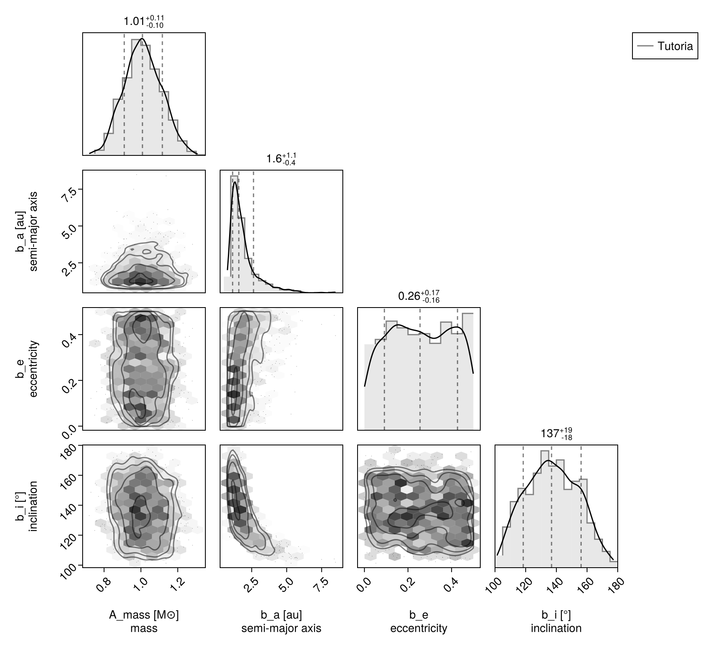
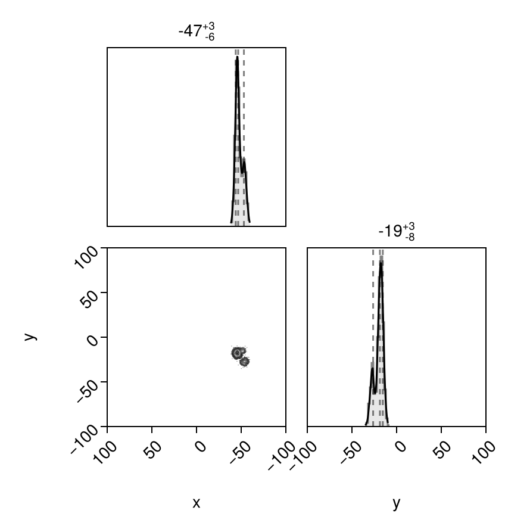
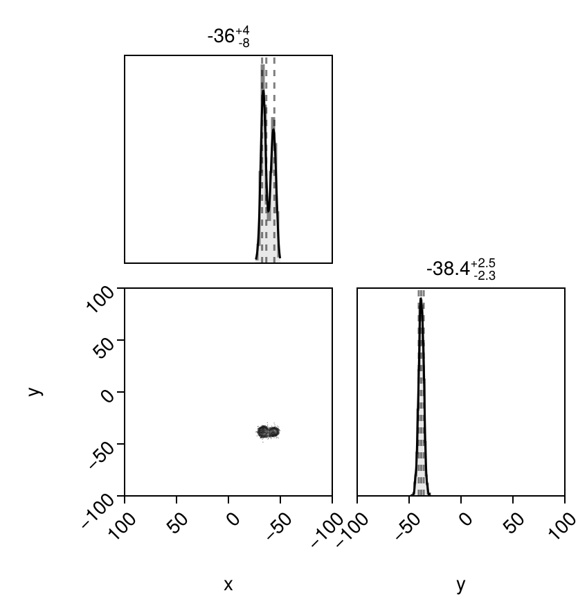
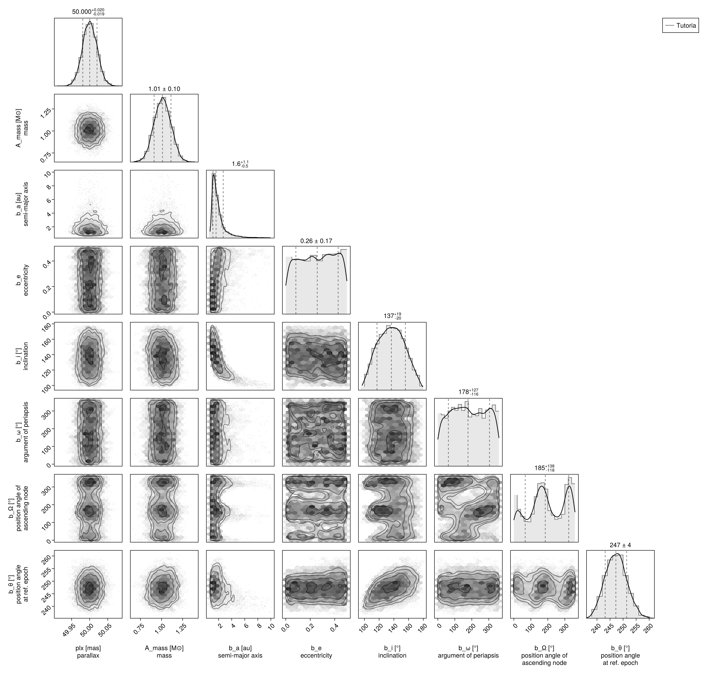

Fitting Likelihood Maps
There are circumstances where you might have a 2D map of planet likelihood vs. position in the plane of the sky ($\Delta$ R.A. and Dec.). These could originate from:
- cleaned interferometer data
- some kind of spectroscopic cube model fitting to detect planets
- some other imaginative modelling process I haven't thought of!
You can feed such 2D likelihood maps in to Octofitter. Simply pass in a list of maps and a platescale mapping the pixel size to a separation in milliarcseconds. You can of course also mix these likelihood maps with relative astrometry, radial velocity, proper motion, images, etc.
If your likelihood map is not centered on the star, you can specify offset dimensions as shown below.
Image modelling is supported in Octofitter via the extension package OctofitterImages. To install it, run pkg> add http://github.com/sefffal/Octofitter.jl:OctofitterImages
For simple models of interferometer data, OctofitterInterferometry.jl can already handle fitting point sources directly to visibilities.
using Octofitter
using Distributions
using OctofitterImages
using Pigeons
using AstroImages
using PlanetOrbits
using CairoMakieTypically one would load your likelihood maps from eg. FITS files like so:
# If centred at the star:
image1 = AstroImages.recenter(AstroImages.load("image-example-1.fits",1))
# If not centered at the star:
image1 = AstroImages.load("image-example-1.fits")
image1_offset = AstroImage(
image1,
# Specify coordinates here:
(
# X coordinates should go from negative to positive.
# The image should have +RA at the left.
X(-4.85878653527304:1.0:95.14121346472696),
Y(-69.0877222942365:1.0:30.9122777057635)
)
# Below, there is a platescale option. `platescale` multiplies
# these values by a scaling factor. It can be 1 if the coordinates
# above are already in milliarcseconds.
)
imview(image1_offset)If you're using a FITS file, make sure to store your data in 64-bit floating point format.
For this demonstration, however, we will construct two synthetic likelihood maps using a template orbit. We will create three peaks in two epochs.
The template is a PlanetOrbits.jl system built directly, rather than an Octofitter model — we only want somewhere to evaluate a position, not a fit. Note that Body, Orbit and System have to be qualified with PlanetOrbits. here, because Octofitter exports model-building types of the same names.
star_template = PlanetOrbits.Body(mass=1.0, name=:A)
planet_template = PlanetOrbits.Body(mass=0.0, name=:b)
orbit_template = PlanetOrbits.System(
(star_template, planet_template),
(PlanetOrbits.Orbit(planet_template; about=star_template,
a = 1.0,
e = 0.1,
i = 0.0,
ω = 0.0,
Ω = 0.5,
tp = 0.0,
),);
plx = 50.0
)
epochs = [
mjd("2024-01-30"),
mjd("2024-02-29"),
]
## Create simulated data with three likelihood peaks at both epochs
sol1 = orbitsolve(orbit_template, epochs[1])
x1, y1 = raoff(sol1, :b, :A), decoff(sol1, :b, :A)
# The three peaks in our likelihood map
d1 = MvNormal([x1, y1], [
5.0 0.2
0.2 8.0
])
d2 = MvNormal([x1+8.0,y1+4], [
5.0 0.6
0.6 5.0
])
d3 = MvNormal([x1+9.0, y1-10.0], [
6.0 0.6
0.6 6.0
])
d = MixtureModel([d1, d2, d3], [0.5, 0.3, 0.2])
# Calculate a log-likelihood map over a +-50 mas patch around (x1, x2)
lm1 = broadcast(x1 .+ (-50:50), y1 .+ (-50:1:50)') do x, y
logpdf(d, [x, y])
end
# Place in an AstroImage with appropriate offset coordinates
image1_offset = AstroImage(
lm1,
# Specify coordinates here:
(
# X coordinates should go from negative to positive.
# The image should have +RA at the left.
X(x1 .+ (-50:50)),
Y(y1 .+ (-50:1:50))
)
# Below, there is a platescale option. `platescale` multiplies
# these values by a scaling factor. It can be 1 if the coordinates
# above are already in milliarcseconds.
)
imview(10 .^ image1_offset)![]()
That was the first epoch. We now generate data for the second epoch:
sol2 = orbitsolve(orbit_template, epochs[2])
x2, y2 = raoff(sol2, :b, :A), decoff(sol2, :b, :A)
# The three peaks in our likelihood map
d1 = MvNormal([x2, y2], [
5.0 0.2
0.2 8.0
])
d2 = MvNormal([x2+10.0,y2], [
5.0 0.6
0.6 5.0
])
d3 = MvNormal([x2-4.0, y2-10.0], [
6.0 0.6
0.6 6.0
])
d = MixtureModel([d1, d2, d3], [0.5, 0.3, 0.2])
lm2 = broadcast(x2 .+ (-50:50), y2 .+ (-50:1:50)') do x, y
logpdf(d, [x, y])
end
# Place in an AstroImage with appropriate offset coordinates
image2_offset = AstroImage(
lm2,
# Specify coordinates here:
(
# X coordinates should go from negative to positive.
# The image should have +RA at the left.
X(x2 .+ (-50:50)),
Y(y2 .+ (-50:1:50))
)
# Below, there is a platescale option. `platescale` multiplies
# these values by a scaling factor. It can be 1 if the coordinates
# above are already in milliarcseconds.
)
imview(10 .^ image2_offset)![]()
Okay, we have our synthetic data. We now set up a LogLikelihoodMapObs object to contain our matrices of log likelihood values:
First, create a table of our likelihood map observations:
likemap_dat = Table(;
epoch = epochs,
map = [image1_offset, image2_offset],
platescale = [1.0, 1.0] # milliarcseconds/pixel of the map
)
loglikemap = LogLikelihoodMapObs(
likemap_dat,
target = :b, # the companion the map describes
ref = :A, # the point index [0,0] of the map sits on
name = "GRAVITY",
variables=@variables begin
platescale = 1.0 # Platescale multiplier [could use: platescale ~ truncated(Normal(1, 0.01), lower=0)]
northangle = 0.0 # North angle offset in radians [could use: northangle ~ Normal(0, deg2rad(1))]
end
);[ Info: :fillvalue not provided. Filling Inf/NaN with minimum log-like value
┌ Info: row:
│ epoch = 60339.0
└ fillvalue = -423.54413289302863
┌ Info: row:
│ epoch = 60369.0
└ fillvalue = -423.54413289302863target and ref take the full reference grammar: a Body model node, a Symbol naming one, or Barycentre. ref is the point each map is centred on (index [0,0]), which need not be the star.
Unlike ImageObs, which takes targets=(b, c) because one image contains every companion at once, a LogLikelihoodMapObs takes a single target. A precomputed log-likelihood surface is one-companion-by-construction: whoever produced it already marginalized or profiled everything else away, and its normalization, jitter and correlated-noise treatment are baked in. To model two companions this way, add two LogLikelihoodMapObs — one per surface.
No flux is involved either, for the same reason: the surface already carries whatever brightness model produced it.
We now create a one-planet model and run the fit using octofit_pigeons. This parallel-tempered sampler is slower than the regular octofit, but is recommended over the default Hamiltonian Monte Carlo sampler due to the multi-modal nature of the data. Observations live on the system, and each names its own target/ref.
A = Body(
name="A",
variables=@variables begin
mass ~ truncated(Normal(1.0, 0.1), lower=0.1) # M⊙
end
)
b = Body(
name="b",
about=A,
variables=@variables begin
a ~ Uniform(0, 10)
e ~ Uniform(0.0, 0.5)
i ~ Sine()
ω ~ UniformCircular()
Ω ~ UniformCircular()
θ ~ UniformCircular()
epoch = 60339.0 # reference epoch for θ. Choose an MJD date near your data.
end
)
sys = System(
name="Tutoria",
bodies=[A, b],
observations=[loglikemap],
variables=@variables begin
plx ~ truncated(Normal(50.0, 0.02), lower=0.1)
end
)
model = Octofitter.LogDensityModel(sys)
init_chain = initialize!(model)
chain, pt = octofit_pigeons(model, n_rounds=10) # increase n_rounds until log(Z₁/Z₀) converges.
display(chain)[ Info: [Tutoria] observing_geometry = true (auto): no observation can report comparable predictions (LogLikelihoodMapObs); nothing to measure, so keeping the correction on — no draws needed (seed 0xc70f177e5000001)
[ Info: [Tutoria] barycentric_lighttime = true (auto): no observation can report comparable predictions (LogLikelihoodMapObs); nothing to measure, so keeping the correction on — no draws needed (seed 0xc70f177e5000001)
[ Info: Preparing model
┌ Info: Determined number of free variables
└ D = 11
┌ Info: Determined number type
└ T = Float64
ℓπcallback(θ): 0.000028 seconds
∇ℓπcallback(θ): 0.000044 seconds (1 allocation: 32 bytes)
┌ Info: Starting values not provided for all parameters! Guessing starting point using global optimization:
│ num_params = 11
└ num_fixed = 0
┌ Warning: Verbosity toggle: unrecognized_stop_reason
│ Unrecognized stop reason: Too many steps (101) without any function evaluations (probably search has converged). Defaulting to ReturnCode.Default.
└ @ OptimizationBase ~/.julia/packages/OptimizationBase/y1GZt/src/utils.jl:170
┌ Info: Found sample of initial positions
│ logpost_range = (-18.328487849749393, -8.63700961325813)
└ mean_logpost = -12.708990133400803
┌ Warning: This model has priors that cannot be sampled IID.
└ @ OctofitterPigeonsExt ~/octo-maintenance/runner/actions-runner/_work/Octofitter.jl/Octofitter.jl/ext/OctofitterPigeonsExt.jl:192
[ Info: Sampler running with multiple threads : true
[ Info: Likelihood evaluated with multiple threads: false
[ Info: [Tutoria] observing_geometry = true (user)
[ Info: [Tutoria] barycentric_lighttime = true (user)
[ Info: [Tutoria] observing_geometry = true (user)
[ Info: [Tutoria] barycentric_lighttime = true (user)
────────────────────────────────────────────────────────────────────────────────────────────────────────────────────────
scans restarts Λ Λ_var time(s) allc(B) log(Z₁/Z₀) min(α) mean(α) min(αₑ) mean(αₑ)
────────── ────────── ────────── ────────── ────────── ────────── ────────── ────────── ────────── ────────── ──────────
2 0 1.83 1.67 1.17 5.43e+06 -40.4 1.45e-24 0.887 1 1
4 0 4.11 3.15 0.0511 1.89e+05 -17.6 0.0284 0.766 1 1
┌ Warning: Failed to construct the orbital system from these parameters
│ exception =
│ these orbits do not independently determine every body's position — the hierarchy is circular or redundant. Rows, as (exterior about interior):
│ 1: (:b,) about (:A,)
│ Stacktrace:
│ [1] error(s::String)
│ @ Base ./error.jl:44
│ [2] _err_singular(names::Tuple{Symbol, Symbol}, specs::Tuple{PlanetOrbits.RowSpec{2}})
│ @ PlanetOrbits ~/octo-maintenance/runner/actions-runner/_work/Octofitter.jl/Octofitter.jl/.planetorbits-v2/src/system.jl:287
│ [3] PlanetOrbits.System(bodyspec::Tuple{PlanetOrbits.Body{Float64, @NamedTuple{}, :A}, PlanetOrbits.Body{Float64, @NamedTuple{}, :b}}, orbits::Tuple{PlanetOrbits.Orbit{PlanetOrbits.Body{Float64, @NamedTuple{}, :b}, PlanetOrbits.Body{Float64, @NamedTuple{}, :A}, Float64}}; kwargs::@Kwargs{plx::Float64})
│ @ PlanetOrbits ~/octo-maintenance/runner/actions-runner/_work/Octofitter.jl/Octofitter.jl/.planetorbits-v2/src/system.jl:141
│ [4] System
│ @ ~/octo-maintenance/runner/actions-runner/_work/Octofitter.jl/Octofitter.jl/.planetorbits-v2/src/system.jl:104 [inlined]
│ [5] macro expansion
│ @ ~/octo-maintenance/runner/actions-runner/_work/Octofitter.jl/Octofitter.jl/src/model/codegen.jl:579 [inlined]
│ [6] macro expansion
│ @ ~/.julia/packages/RuntimeGeneratedFunctions/odmYb/src/RuntimeGeneratedFunctions.jl:247 [inlined]
│ [7] macro expansion
│ @ ./none:0 [inlined]
│ [8] generated_callfunc
│ @ ./none:0 [inlined]
│ [9] RuntimeGeneratedFunction
│ @ ~/.julia/packages/RuntimeGeneratedFunctions/odmYb/src/RuntimeGeneratedFunctions.jl:234 [inlined]
│ [10] GeneratedLnLike
│ @ ~/octo-maintenance/runner/actions-runner/_work/Octofitter.jl/Octofitter.jl/src/model/codegen.jl:662 [inlined]
│ [11] (::Octofitter.var"#ℓπcallback#272"{System{Tuple{Body{Octofitter.Priors, Octofitter.Derived, Tuple{}}, Body{Octofitter.Priors, Octofitter.Derived, Tuple{Octofitter.UnitLengthPrior{:ωx, :ωy}, Octofitter.UnitLengthPrior{:Ωx, :Ωy}, Octofitter.UnitLengthPrior{:θx, :θy}}}}, Tuple{Octofitter.BlankLikelihood}, Tuple{Pair{Symbol, Octofitter.UnitLengthPrior{:ωx, :ωy}}, Pair{Symbol, Octofitter.UnitLengthPrior{:Ωx, :Ωy}}, Pair{Symbol, Octofitter.UnitLengthPrior{:θx, :θy}}}, Octofitter.Priors, Octofitter.Derived, KeplerianApprox{PlanetOrbits.Auto}}, RuntimeGeneratedFunctions.RuntimeGeneratedFunction{(:arr,), Octofitter.var"#_RGF_ModTag", Octofitter.var"#_RGF_ModTag", (0x7d95de30, 0x10a80803, 0xe8be156a, 0xe31a4f3f, 0x57976e8a), Expr}, RuntimeGeneratedFunctions.RuntimeGeneratedFunction{(:arr,), Octofitter.var"#_RGF_ModTag", Octofitter.var"#_RGF_ModTag", (0x1ed339a3, 0x646fe3b1, 0x5f4e8541, 0x5c6e8728, 0x46dea2d5), Expr}, RuntimeGeneratedFunctions.RuntimeGeneratedFunction{(:arr, :sampled), Octofitter.var"#_RGF_ModTag", Octofitter.var"#_RGF_ModTag", (0x413b9c31, 0x39784691, 0x9c83c907, 0xde4f104e, 0x2da6d779), Expr}, Octofitter.GeneratedLnLike{RuntimeGeneratedFunctions.RuntimeGeneratedFunction{(:θ,), Octofitter.var"#_RGF_ModTag", Octofitter.var"#_RGF_ModTag", (0xc37da432, 0x967cea50, 0xbf25d6ee, 0x1023beb0, 0x5dbdd21f), Expr}, RuntimeGeneratedFunctions.RuntimeGeneratedFunction{(:system, :θ, :posys), Octofitter.var"#_RGF_ModTag", Octofitter.var"#_RGF_ModTag", (0x79e030c8, 0xaa2c31cf, 0x7b2fc321, 0xdbfb1e26, 0xdb8aa70a), Expr}}, Octofitter.var"#ℓπcallback#263#273"})(θ_transformed::Vector{Float64}, system::System{Tuple{Body{Octofitter.Priors, Octofitter.Derived, Tuple{}}, Body{Octofitter.Priors, Octofitter.Derived, Tuple{Octofitter.UnitLengthPrior{:ωx, :ωy}, Octofitter.UnitLengthPrior{:Ωx, :Ωy}, Octofitter.UnitLengthPrior{:θx, :θy}}}}, Tuple{Octofitter.BlankLikelihood}, Tuple{Pair{Symbol, Octofitter.UnitLengthPrior{:ωx, :ωy}}, Pair{Symbol, Octofitter.UnitLengthPrior{:Ωx, :Ωy}}, Pair{Symbol, Octofitter.UnitLengthPrior{:θx, :θy}}}, Octofitter.Priors, Octofitter.Derived, KeplerianApprox{PlanetOrbits.Auto}}, arr2nt::RuntimeGeneratedFunctions.RuntimeGeneratedFunction{(:arr,), Octofitter.var"#_RGF_ModTag", Octofitter.var"#_RGF_ModTag", (0x7d95de30, 0x10a80803, 0xe8be156a, 0xe31a4f3f, 0x57976e8a), Expr}, Bijector_invlinkvec::RuntimeGeneratedFunctions.RuntimeGeneratedFunction{(:arr,), Octofitter.var"#_RGF_ModTag", Octofitter.var"#_RGF_ModTag", (0x1ed339a3, 0x646fe3b1, 0x5f4e8541, 0x5c6e8728, 0x46dea2d5), Expr}, ln_prior_transformed::RuntimeGeneratedFunctions.RuntimeGeneratedFunction{(:arr, :sampled), Octofitter.var"#_RGF_ModTag", Octofitter.var"#_RGF_ModTag", (0x413b9c31, 0x39784691, 0x9c83c907, 0xde4f104e, 0x2da6d779), Expr}, ln_like_generated::Octofitter.GeneratedLnLike{RuntimeGeneratedFunctions.RuntimeGeneratedFunction{(:θ,), Octofitter.var"#_RGF_ModTag", Octofitter.var"#_RGF_ModTag", (0xc37da432, 0x967cea50, 0xbf25d6ee, 0x1023beb0, 0x5dbdd21f), Expr}, RuntimeGeneratedFunctions.RuntimeGeneratedFunction{(:system, :θ, :posys), Octofitter.var"#_RGF_ModTag", Octofitter.var"#_RGF_ModTag", (0x79e030c8, 0xaa2c31cf, 0x7b2fc321, 0xdbfb1e26, 0xdb8aa70a), Expr}}; sampled::Bool)
│ @ Octofitter ~/octo-maintenance/runner/actions-runner/_work/Octofitter.jl/Octofitter.jl/src/logdensitymodel.jl:242
│ [12] ℓπcallback (repeats 6 times)
│ @ ~/octo-maintenance/runner/actions-runner/_work/Octofitter.jl/Octofitter.jl/src/logdensitymodel.jl:218 [inlined]
│ [13] LogDensityModel
│ @ ~/octo-maintenance/runner/actions-runner/_work/Octofitter.jl/Octofitter.jl/ext/OctofitterPigeonsExt.jl:23 [inlined]
│ [14] InterpolatedLogPotential
│ @ ~/.julia/packages/Pigeons/y3Kae/src/paths/InterpolatedLogPotential.jl:16 [inlined]
│ [15] slice_double(h::Pigeons.SliceSampler, replica::Pigeons.Replica{Vector{Float64}, @NamedTuple{explorer_acceptance_pr::OnlineStatsBase.GroupBy{Int64, Number, OnlineStatsBase.Mean{Float64, OnlineStatsBase.EqualWeight}}, explorer_n_steps::OnlineStatsBase.GroupBy{Int64, Number, OnlineStatsBase.Sum{Float64}}, swap_acceptance_pr::OnlineStatsBase.GroupBy{Tuple{Int64, Int64}, Number, OnlineStatsBase.Mean{Float64, OnlineStatsBase.EqualWeight}}, log_sum_ratio::OnlineStatsBase.GroupBy{Tuple{Int64, Int64}, Number, Pigeons.LogSum{Float64}}, traces::Dict{Pair{Int64, Int64}, Any}, round_trip::Pigeons.RoundTripRecorder, timing_extrema::NonReproducible{...}, allocation_extrema::NonReproducible{...}, index_process::Dict{Int64, Vector{Int64}}, _transformed_online::Pigeons.OnlineStateRecorder}}, z::Float64, pointer::Base.RefArray{Float64, Vector{Float64}, Nothing}, log_potential::InterpolatedLogPotential{...})
│ @ Pigeons ~/.julia/packages/Pigeons/y3Kae/src/explorers/SliceSampler.jl:118
│ [16] slice_sample_coord!
│ @ ~/.julia/packages/Pigeons/y3Kae/src/explorers/SliceSampler.jl:92 [inlined]
│ [17] slice_sample!(h::Pigeons.SliceSampler, state::Vector{Float64}, log_potential::InterpolatedLogPotential{...}, cached_lp::Float64, replica::Pigeons.Replica{Vector{Float64}, @NamedTuple{explorer_acceptance_pr::OnlineStatsBase.GroupBy{Int64, Number, OnlineStatsBase.Mean{Float64, OnlineStatsBase.EqualWeight}}, explorer_n_steps::OnlineStatsBase.GroupBy{Int64, Number, OnlineStatsBase.Sum{Float64}}, swap_acceptance_pr::OnlineStatsBase.GroupBy{Tuple{Int64, Int64}, Number, OnlineStatsBase.Mean{Float64, OnlineStatsBase.EqualWeight}}, log_sum_ratio::OnlineStatsBase.GroupBy{Tuple{Int64, Int64}, Number, Pigeons.LogSum{Float64}}, traces::Dict{Pair{Int64, Int64}, Any}, round_trip::Pigeons.RoundTripRecorder, timing_extrema::NonReproducible{...}, allocation_extrema::NonReproducible{...}, index_process::Dict{Int64, Vector{Int64}}, _transformed_online::Pigeons.OnlineStateRecorder}})
│ @ Pigeons ~/.julia/packages/Pigeons/y3Kae/src/explorers/SliceSampler.jl:49
│ [18] step!(explorer::Pigeons.SliceSampler, replica::Pigeons.Replica{Vector{Float64}, @NamedTuple{explorer_acceptance_pr::OnlineStatsBase.GroupBy{Int64, Number, OnlineStatsBase.Mean{Float64, OnlineStatsBase.EqualWeight}}, explorer_n_steps::OnlineStatsBase.GroupBy{Int64, Number, OnlineStatsBase.Sum{Float64}}, swap_acceptance_pr::OnlineStatsBase.GroupBy{Tuple{Int64, Int64}, Number, OnlineStatsBase.Mean{Float64, OnlineStatsBase.EqualWeight}}, log_sum_ratio::OnlineStatsBase.GroupBy{Tuple{Int64, Int64}, Number, Pigeons.LogSum{Float64}}, traces::Dict{Pair{Int64, Int64}, Any}, round_trip::Pigeons.RoundTripRecorder, timing_extrema::NonReproducible{...}, allocation_extrema::NonReproducible{...}, index_process::Dict{Int64, Vector{Int64}}, _transformed_online::Pigeons.OnlineStateRecorder}}, shared::Shared{...})
│ @ Pigeons ~/.julia/packages/Pigeons/y3Kae/src/explorers/SliceSampler.jl:28
│ [19] explore!(pt::PT{...}, replica::Pigeons.Replica{Vector{Float64}, @NamedTuple{explorer_acceptance_pr::OnlineStatsBase.GroupBy{Int64, Number, OnlineStatsBase.Mean{Float64, OnlineStatsBase.EqualWeight}}, explorer_n_steps::OnlineStatsBase.GroupBy{Int64, Number, OnlineStatsBase.Sum{Float64}}, swap_acceptance_pr::OnlineStatsBase.GroupBy{Tuple{Int64, Int64}, Number, OnlineStatsBase.Mean{Float64, OnlineStatsBase.EqualWeight}}, log_sum_ratio::OnlineStatsBase.GroupBy{Tuple{Int64, Int64}, Number, Pigeons.LogSum{Float64}}, traces::Dict{Pair{Int64, Int64}, Any}, round_trip::Pigeons.RoundTripRecorder, timing_extrema::NonReproducible{...}, allocation_extrema::NonReproducible{...}, index_process::Dict{Int64, Vector{Int64}}, _transformed_online::Pigeons.OnlineStateRecorder}}, explorer::Pigeons.SliceSampler)
│ @ Pigeons ~/.julia/packages/Pigeons/y3Kae/src/pt/pigeons.jl:107
│ [20] macro expansion
│ @ ~/.julia/packages/Pigeons/y3Kae/src/pt/pigeons.jl:84 [inlined]
│ [21] (::Pigeons.var"#explore!##0#explore!##1"{Pigeons.var"#explore!##2#explore!##3"{PT{...}, Pigeons.SliceSampler, Vector{Pigeons.Replica{Vector{Float64}, @NamedTuple{explorer_acceptance_pr::OnlineStatsBase.GroupBy{Int64, Number, OnlineStatsBase.Mean{Float64, OnlineStatsBase.EqualWeight}}, explorer_n_steps::OnlineStatsBase.GroupBy{Int64, Number, OnlineStatsBase.Sum{Float64}}, swap_acceptance_pr::OnlineStatsBase.GroupBy{Tuple{Int64, Int64}, Number, OnlineStatsBase.Mean{Float64, OnlineStatsBase.EqualWeight}}, log_sum_ratio::OnlineStatsBase.GroupBy{Tuple{Int64, Int64}, Number, Pigeons.LogSum{Float64}}, traces::Dict{Pair{Int64, Int64}, Any}, round_trip::Pigeons.RoundTripRecorder, timing_extrema::NonReproducible{...}, allocation_extrema::NonReproducible{...}, index_process::Dict{Int64, Vector{Int64}}, _transformed_online::Pigeons.OnlineStateRecorder}}}}})(tid::Int64; onethread::Bool)
│ @ Pigeons ./threadingconstructs.jl:279
│ [22] #explore!##0
│ @ ./threadingconstructs.jl:246 [inlined]
│ [23] (::Base.Threads.var"#threading_run##0#threading_run##1"{Pigeons.var"#explore!##0#explore!##1"{Pigeons.var"#explore!##2#explore!##3"{PT{...}, Pigeons.SliceSampler, Vector{Pigeons.Replica{Vector{Float64}, @NamedTuple{explorer_acceptance_pr::OnlineStatsBase.GroupBy{Int64, Number, OnlineStatsBase.Mean{Float64, OnlineStatsBase.EqualWeight}}, explorer_n_steps::OnlineStatsBase.GroupBy{Int64, Number, OnlineStatsBase.Sum{Float64}}, swap_acceptance_pr::OnlineStatsBase.GroupBy{Tuple{Int64, Int64}, Number, OnlineStatsBase.Mean{Float64, OnlineStatsBase.EqualWeight}}, log_sum_ratio::OnlineStatsBase.GroupBy{Tuple{Int64, Int64}, Number, Pigeons.LogSum{Float64}}, traces::Dict{Pair{Int64, Int64}, Any}, round_trip::Pigeons.RoundTripRecorder, timing_extrema::NonReproducible{...}, allocation_extrema::NonReproducible{...}, index_process::Dict{Int64, Vector{Int64}}, _transformed_online::Pigeons.OnlineStateRecorder}}}}}, Int64})()
│ @ Base.Threads ./threadingconstructs.jl:178
└ @ Octofitter ~/octo-maintenance/runner/actions-runner/_work/Octofitter.jl/Octofitter.jl/src/model/codegen.jl:665
8 0 3.57 3.6 0.219 5.43e+06 -21.9 0.299 0.769 1 1
16 0 4.22 2.93 0.236 6.34e+05 -19.3 0.56 0.769 1 1
32 0 4.28 3.6 0.429 1.05e+06 -19.1 0.442 0.746 1 1
64 4 3.67 3.14 1.77 5.01e+07 -21.1 0.606 0.78 1 1
128 22 4.06 2.95 1.7 8.05e+07 -20.9 0.646 0.774 1 1
256 31 3.95 2.95 3.82 1.6e+08 -21.1 0.658 0.777 1 1
512 81 3.88 3.09 6.73 3.2e+08 -21 0.686 0.775 1 1
1.02e+03 167 3.86 3.14 13.3 6.37e+08 -21.1 0.704 0.774 1 1
────────────────────────────────────────────────────────────────────────────────────────────────────────────────────────Likelihood maps are the archetypal multi-modal data set — the synthetic maps above have three peaks deliberately — and that is exactly why this page samples with octofit_pigeons. Its tempered chains run all the way down to the prior, where the three peaks merge into one broad surface, so replicas can migrate between modes and every peak stays represented in the posterior.
A single HMC chain from octofit will instead find one peak and stay in it, giving a posterior narrower than the data justify. If you do choose HMC here, run several chains from different starting points (initialize! before each) and compare them, rather than trusting a single run.
octofit_pigeons scales very well across multiple cores. Start julia with julia --threads=auto to make sure you have multiple threads available for sampling.
Display the results:
using CairoMakie
octoplot(model, chain)
Corner plot:
using CairoMakie, PairPlots
octocorner(model,chain,small=true,)
And finally let's look at the posterior predictive distributions at both epochs. construct_system(model, chain) rebuilds one PlanetOrbits system per posterior draw:
posteriors = construct_system(model, chain)
x = [raoff(orbitsolve(p, loglikemap.table.epoch[1]), :b, :A) for p in posteriors]
y = [decoff(orbitsolve(p, loglikemap.table.epoch[1]), :b, :A) for p in posteriors]
pairplot(
(;x,y),
axis=(
x = (;
lims=(low=100,high=-100)
),
y = (;
lims=(low=-100,high=100)
)
)
)
x = [raoff(orbitsolve(p, loglikemap.table.epoch[2]), :b, :A) for p in posteriors]
y = [decoff(orbitsolve(p, loglikemap.table.epoch[2]), :b, :A) for p in posteriors]
pairplot(
(;x,y),
axis=(
x = (;
lims=(low=100,high=-100)
),
y = (;
lims=(low=-100,high=100)
)
)
)
Resume sampling for additional rounds
If you would like to add additional rounds of sampling, you may do the following:
pt = increment_n_rounds!(pt, 2)
chain, pt = octofit_pigeons(pt)(chain = MCMC chain (4096×21×1 Array{Float64, 3}), pt = PT(checkpoint = false, ...))This picks up where the previous run left off — no need to start over — which is the usual way to keep adding rounds until log(Z₁/Z₀) stops drifting.
Updated corner plot:
using CairoMakie, PairPlots
octocorner(model,chain,small=false,)